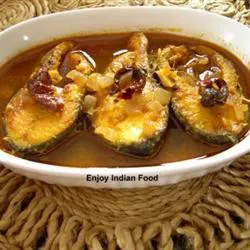

Machhere Jhol

A delicate Bengali fish curry. In India, the best parts of a fish are often reserved as a fillet and served grilled,
broiled, or cooked alongside a fish stew or curry containing the less attractive portions of fish.
Ingredients
- 2 pounds thick whitefish fillets, cut into large chunks
- 2 cups water
- 1 tablespoon vegetable oil
- ½ teaspoon cumin seeds
Steps
- Bring the tomatoes, cumin, turmeric, salt, and water to a boil.
- Heat the oil in a skillet over medium-high heat; cook the fish in the oiled skillet until golden brown, 2 to 3 minutes per side.
- Simmer until the flavors integrate, about 10 minutes more. Serve hot.